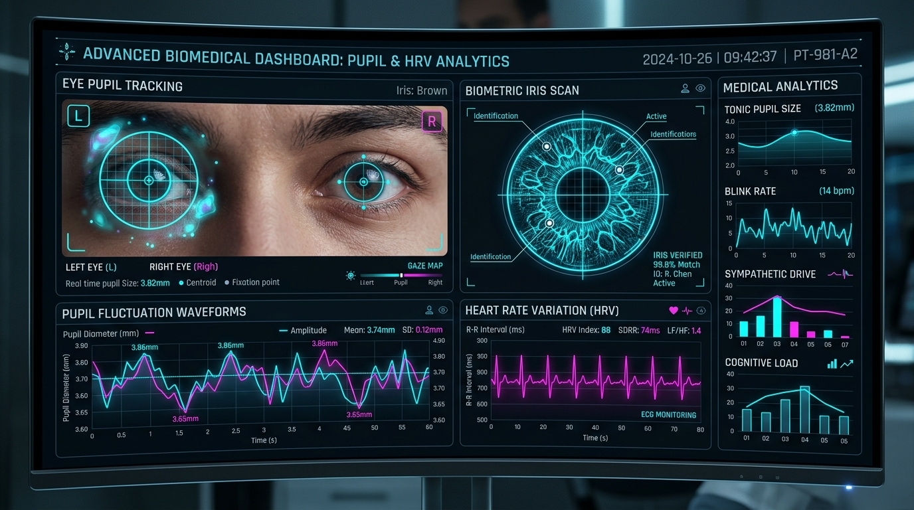

Biomedical AI & Computer Vision
Pupil Heart Rate Variability Monitoring via Pupillary Fluctuations
An innovative biomedical computer vision system that non-invasively derives Heart Rate Variability (HRV) and autonomic nervous system (ANS) sympathetic/parasympathetic balance by measuring micro-fluctuations in pupil diameter.
High-Precision Pupillometry: OpenCV & facial landmark detection for sub-pixel pupil boundary extraction and elliptical fitting under dynamic illumination.
Signal Processing Pipeline: 4th-order Butterworth bandpass filter & wavelet denoising isolating pupillary unrest and cardiac pulse rhythm oscillations.
HRV Metric Extraction: Fast Fourier Transform (FFT) Power Spectral Density computing Low Frequency (LF) to High Frequency (HF) autonomic balance ratio.
Interactive Web Dashboard: Real-time Flask application streaming live pupil waveform, instantaneous BPM, and cognitive load stress index.
Python
OpenCV
Live Webcam CV
SciPy / Signal
NumPy
Flask
Biomedical Signal Processing